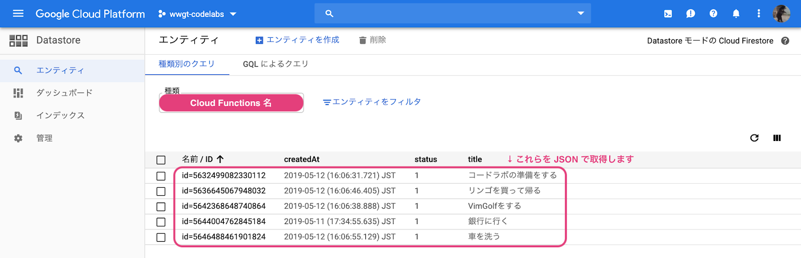

このコードラボでは、タスクを追加・表示・編集するプログラムを Go で書いて Google Cloud Functions に公開することで、イベント駆動型のサーバレスアプリケーション開発を体験できます。
下記の流れで開発を行います。
- Go で書かれたサンプルコードを取得・確認する。
- サンプルコードを Google Cloud Functions に公開する。
- 公開したアプリケーションを動かしてみる。
- サンプルコードを変更して 2. と 3. を行う。
Google Cloud Functions とは
Google Cloud Functions は、Google Cloud Platform 上のサービスの一つです。
また、2019年1月より Go でも書けるようになりました。
Google Cloud Functions には、 HTTPS でアクセスすることで実行できる HTTP 関数と、Google Cloud Platform 内のイベントから呼び出すことができるバックグラウンド関数の2種類があります。ここでは HTTP 関数を作成します。
Go の開発環境は必要でしょうか？
このコードラボでは Google Cloud Shell というクラウド上の開発環境を利用します。お使いのコンピューター上で Go の開発環境を用意する必要はありません。
Google Cloud Shell の詳しい説明と使い方は Google Cloud Shell で Go の開発をはじめよう を参照してください。
プロジェクトにアクセスする
Google Cloud Shell で Go の開発をはじめよう の手順に従って、Google Cloud Console にアクセスしましょう。
はじめに、Cloud Build を有効にしましょう。Cloud Build は、Google Cloud 上でビルドを実行するサービスです。途中で課金の設定が求められます。クレジットカードが必要になりますが、2022年4月現在、初回登録時に90日間限定で$300相当のクレジットが無料で利用できます。
※既にクレジットカードを登録し、無料枠を使いきってしまっている方は料金が発生します。料金は2022年4月現在、1ビルド$0.00485〜$0.10448です（利用するCPUの数などで料金が変わります）。料金は変更されることがあるので、Cloud Buildの料金 で確認してみましょう。
それでは次に進みましょう。
Cloud Buildを有効にする
次の「Cloud Buildを有効にする」をクリックします。
Cloud Buildを有効化する画面が表示されます。「有効にする」をクリックします。
「課金を有効にする」をクリックします。

請求書先のアカウントがない場合、次の画面が表示されます。「請求先アカウントを作成」をクリックし、請求書先を登録しましょう。
「国」と「組織またはニーズ」に該当するものを選択します。利用規約を読み、チェックをいれ「続行」をクリックしましょう。
個人利用の場合は「アカウントの種類」で「個人」を選択します。「カードを追加」をクリックすると、クレジットカードかPaypalどちらかを選択できます。お支払い情報を設定したら「無料トライアルを開始」をクリックしましょう。

既に請求書先アカウントを登録している場合は、次の画面が表示されます。請求書先アカウントを選択し「アカウントを設定」をクリックしましょう。
Google Cloud Platformコンソールの Cloud Build に戻りましょう。Cloud Buildが有効になっている場合、次のように表示されます。リージョンを選択しましょう。東京リージョンは asia-northeast1 、大阪は asia-northeast2 です。今回は、東京リージョンを使用します。

GitHub からコードラボで利用するサンプルコードを取得しましょう。
Google Cloud Shell で Go の開発をはじめよう の手順に従って、git clone コマンドを実行します。
$ git clone https://github.com/WomenWhoGoTokyo/codelab.git
codelab/taskmanager というディレクトリが作られていることを Google Cloud Shell のコンソールで確認しましょう。
$ cd codelab/taskmanager $ ls README.md function.go go.mod go.sum parameter.go status.go task.go
git clone したファイルの中に go.mod があります。Google Cloud Functions で Go のプログラムを動かすためには、Go Modules が必要です。
Google Cloud Shell で Go の開発をはじめよう の手順に従って, Goolge Cloud Shell のエディタで codelab > taskmanager > go.mod を開いてみましょう。
module github.com/WomenWhoGoTokyo/codelab/taskmanager
go 1.16
require cloud.google.com/go/datastore v1.6.0
...
このように、Go のランタイム (このコードラボでは 1.16) が指定されています。
また、プログラム内で利用している外部パッケージのバージョンもここで指定します。
このコードラボでは、Go Modules の詳細な仕組みについては触れませんが、興味のある方は会場内のエンジニアにぜひ聞いてみてください。
go mod tidy コマンドを使って、パッケージを更新しましょう。Goでは go.mod ファイルにビルド時に必要なパッケージが記載されています。 go mod tidy は、 go.mod に記載されているパッケージの依存関係の更新をおこないます。
以下のコマンドを実行します。
$ go mod tidy取得した Go のプログラムを Google Cloud Shell で Go の開発をはじめよう の Google Cloud Shell で Go のプログラムを公開する の手順に従って、Google Cloud Functions に公開してみましょう。
次のコマンドで、Google Cloud Functions に公開します。
$ gcloud functions deploy {Cloud Functions Name} \
--runtime go116 \
--entry-point TaskManager \
--trigger-http
--entry-point は省略することが可能ですが、その場合は、Cloud Functions Nameと同じになります。
公開コマンドを実行の後、このようにコンソールに表示されたら、うまく公開ができています。
status: ACTIVE timeout: 60s updateTime: '2019-05-11T08:11:43Z' versionId: '1'
また、このコードラボでは、Cloud Functions NameとプロジェクトIDを環境変数にセットしてプログラム内で利用します。
環境変数を設定するコマンドを実行しましょう。
$ gcloud functions deploy {Cloud Functions Name} \
--set-env-vars GCP_PROJECT={プロジェクトID},MY_CODE={Cloud Functions Name}
公開したアプリケーションを確認しましょう。
アクセスする
https://console.cloud.google.com/?hl=ja にアクセスしましょう。
Google Cloud Platform の Cloud Functions をクリックすると、Cloud Functions の一覧が表示されます。
一覧で、公開した Cloud Functions Nameをクリックします。
トリガーをクリックし、HTTP トリガーの URL を確認しましょう。
タスクを追加する
コンソールでタスクを追加するコマンドを実行しましょう。
1つ目:
$ curl -XPOST -H "Content-Type: application/json" \
-d '{"title":"銀行に行く"}' \
{HTTP トリガー URL}
データを見る
Google Cloud Platform 上でデータを確認します。
データストア > エンティティ をクリックしましょう。
"種類" を Cloud Functions Nameにすると、コマンドで登録した情報が格納されていることが確認できます。
さらにタスクを追加する
何回か curl コマンドを実行し、複数のタスクを登録します。
下記は例です。自由なタスクを登録しましょう。
2つ目:
$ curl -XPOST -H "Content-Type: application/json" \
-d '{"title":"コードラボの準備をする"}' \
{HTTP トリガー URL}
3つ目:
$ curl -XPOST -H "Content-Type: application/json" \
-d '{"title":"VimGolfをする"}' \
{HTTP トリガー URL}
4つ目:
$ curl -XPOST -H "Content-Type: application/json" \
-d '{"title":"リンゴを買って帰る"}' \
{HTTP トリガー URL}
5つ目:
$ curl -XPOST -H "Content-Type: application/json" \
-d '{"title":"車を洗う"}' \
{HTTP トリガー URL}
さらに追加したタスクを見る
さらに追加したタスクが登録されていることを確認しましょう。
登録したタスクを JSON で取得しましょう。

Google Cloud Shell で Go の開発をはじめよう の手順に従って、Goolge Cloud Shell のエディタを立ち上げます。
タスクを取得するプログラムを書く
codelab > taskmanager > task.go を開きましょう。
下記の場所にプログラムを追加します。
書き換える箇所は、このように変更します。
Before:
type Task struct {
ID int64 `datastore:"-"`
Title string `datastore:"title"`
Status Status `datastore:"status"`
CreatedAt time.Time `datastore:"createdAt"`
}After:
type Task struct {
ID int64 `datastore:"-" json:"ID"`
Title string `datastore:"title" json:"title"`
Status Status `datastore:"status" json:"status"`
CreatedAt time.Time `datastore:"createdAt" json:"createdAt"`
}また、ファイルの最後に、この関数を追加しましょう。
func getAllTask() ([]Task, error) {
ctx := context.Background()
client, err := datastore.NewClient(ctx, os.Getenv("GCP_PROJECT"))
if err != nil {
return nil, err
}
var t []Task
q := datastore.NewQuery(os.Getenv("MY_CODE"))
keys, err := client.GetAll(ctx, q, &t)
if err != nil {
return nil, err
}
for i, key := range keys {
t[i].ID = key.ID
}
return t, nil
}タスクを取得する処理を呼び出すプログラムを書く
codelab > taskmanager > function.go を開きましょう。
下記の場所にプログラムを追加します。
タスクを取得するプログラムの呼び出しは、下記のように書きます。
.
.
.
// 一覧取得
case http.MethodGet:
t, err := getAllTask()
if err != nil {
responseWrite(w, http.StatusInternalServerError, err.Error(), err)
return
}
if len(t) < 1 {
responseWrite(w, http.StatusOK, "0 tasks", nil)
return
}
b, err := json.Marshal(t)
if err != nil {
responseWrite(w, http.StatusInternalServerError, err.Error(), err)
return
}
w.WriteHeader(http.StatusOK)
w.Write(b)
// ステータス変更
case http.MethodPatch:
.
.
.File > SaveAll を選択して、保存します。
変更したプログラムを公開する
コンソールでコマンドを実行して、Go のプログラムを公開しましょう。
$ gcloud functions deploy {Cloud Functions Name} \
--runtime go116 \
--entry-point TaskManager \
--trigger-http
アプリケーションを確認する
コンソールで curl コマンドを実行して、タスクを取得してみましょう。
$ curl -XGET -H "Content-Type: application/json" \
{HTTP トリガー URL} | jq .
タスクには3つのステータスがあります。
名前 | 意味 | 値 |
ToDo | これからやるタスク | 1 |
InProgress | 着手中のタスク | 2 |
Done | 完了したタスク | 3 |
取得したタスクを確認し、ステータスを更新できるようにします。
タスクを更新するプログラムを書く
codelab > taskmanager > task.go を開きましょう。
ファイルの末尾に関数を2つ追加します。
1つ目:
func setTask(id int64, title string, status Status) *Task {
return &Task{
ID: id,
Title: title,
Status: status,
CreatedAt: time.Now(),
}
}2つ目:
func (t Task) update() error {
ctx := context.Background()
client, err := datastore.NewClient(ctx, os.Getenv("GCP_PROJECT"))
if err != nil {
return err
}
key := datastore.IDKey(os.Getenv("MY_CODE"), t.ID, nil)
_, err = client.RunInTransaction(ctx, func(tx *datastore.Transaction) error {
var gt Task
if err := tx.Get(key, >); err != nil {
return err
}
if t.Title == "" {
t.Title = gt.Title
}
if err := t.Status.validate(); err != nil {
t.Status = gt.Status
}
t.CreatedAt = gt.CreatedAt
_, err := tx.Put(key, &t)
return err
})
return err
}タスクを更新する処理を呼び出すプログラムを書く
codelab > taskmanager > function.go を開きましょう。
下記の場所にプログラムを追加します。
タスクを更新するプログラムの呼び出しは、下記のように書きます。
.
.
.
// ステータス変更
case http.MethodPatch:
param, code, err := getJSON(r.Header.Get("Content-Type"), r.Body)
if err != nil {
responseWrite(w, code, err.Error(), err)
return
}
t := setTask(param.ID, param.Title, param.Status)
if err := t.update(); err != nil {
responseWrite(w, http.StatusInternalServerError, err.Error(), err)
return
}
msg := fmt.Sprintf("%v updated", t)
responseWrite(w, http.StatusOK, msg, nil)
// 削除
case http.MethodDelete:
.
.
.File > SaveAll を選択して、保存します。
変更したプログラムを公開する
コンソールでコマンドを実行して、Go のプログラムを公開しましょう。
$ gcloud functions deploy {Cloud Functions Name} \
--runtime go116 \
--entry-point TaskManager \
--trigger-http
アプリケーションを確認する
コンソールで curl コマンドを実行して、任意のタスクのステータスを更新してみましょう。
指定している ID は、エンティティの "名前 / ID" の数字になるため、各々異なります。
1つ目:
$ curl -XPATCH -H "Content-Type: application/json" \
-d '{"ID":5632499082330112, "status":3}' \
{HTTP トリガー URL}
2つ目:
$ curl -XPATCH -H "Content-Type: application/json" \
-d '{"ID":5642368648740864, "status":2}' \
{HTTP トリガー URL}
データストア > エンティティ をクリックして、status が書き換わっていることを確認しましょう。
ID を指定して削除する処理を追加しましょう。
タスクを削除するプログラムを書く
codelab > taskmanager > task.go を開きましょう。
ファイルの末尾にプログラムを追加します。
func (t Task) delete() error {
ctx := context.Background()
client, err := datastore.NewClient(ctx, os.Getenv("GCP_PROJECT"))
if err != nil {
return err
}
return client.Delete(ctx, datastore.IDKey(os.Getenv("MY_CODE"), t.ID, nil))
}タスクを削除する処理を呼び出すプログラムを書く
codelab > taskmanager > function.go を開きましょう。
下記の場所にプログラムを追加します。
タスクを削除するプログラムの呼び出しは、下記のように書きます。
.
.
.
// 削除
case http.MethodDelete:
param, code, err := getJSON(r.Header.Get("Content-Type"), r.Body)
if err != nil {
responseWrite(w, code, err.Error(), err)
return
}
t := setTask(param.ID, "", 0)
if err := t.delete(); err != nil {
responseWrite(w, http.StatusInternalServerError, err.Error(), err)
return
}
msg := fmt.Sprintf("%v deleted", t)
responseWrite(w, http.StatusOK, msg, nil)
default:
.
.
.File > SaveAll を選択して、保存します。
変更したプログラムを公開する
コンソールでコマンドを実行して、Go のプログラムを公開しましょう。
$ gcloud functions deploy {Cloud Functions Name} \
--runtime go116 \
--entry-point TaskManager \
--trigger-http
アプリケーションを確認する
コンソールで curl コマンドを実行して、任意のタスクを削除してみましょう。
指定している ID は、エンティティの "名前 / ID" の数字になるため、各々異なります。
$ curl -XDELETE -H "Content-Type: application/json" \
-d '{"ID":5644004762845184}' \
{HTTP トリガー URL}
データストア > エンティティ をクリックして、指定したタスクが削除されていることを確認しましょう。
このコードラボでは、タスクを追加・表示・編集するプログラムを Go で書いて Google Cloud Functions に公開することで、イベント駆動型のサーバレスアプリケーション開発を体験しました。
ここで触れたことをきっかけに、他のアプリケーションと連携をしてみたり、Google Cloud Platform 内の他のサービスと連携させてみたりと、Google Cloud Functions と Go がもっと身近に、もっと楽しくなることを願っています。